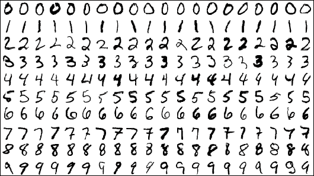
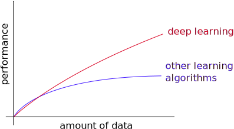
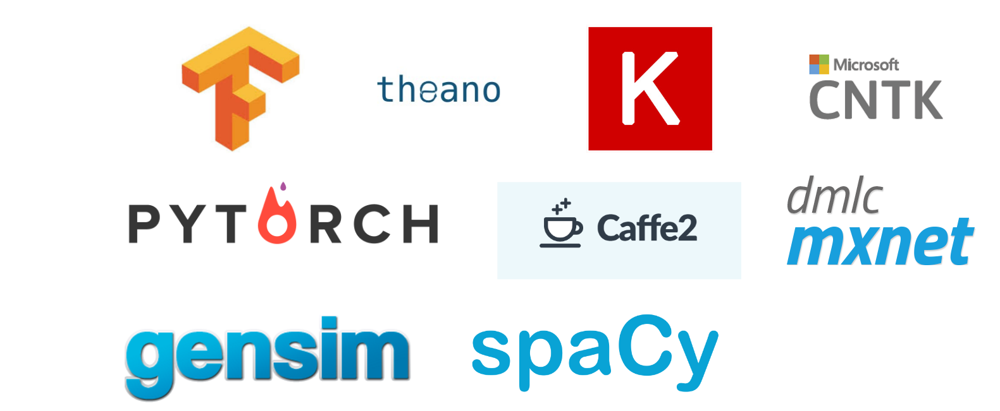
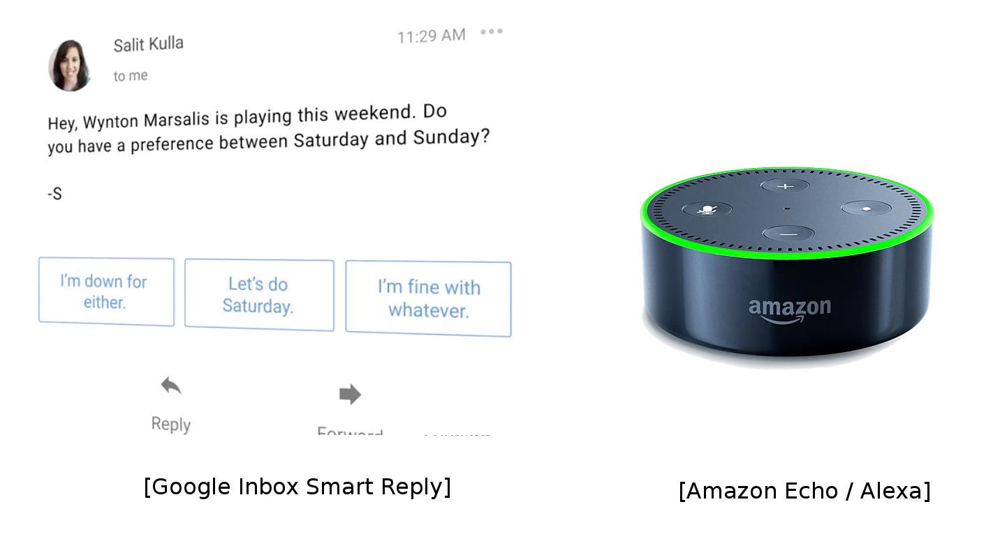

class: center, middle # Introduction au Deep Learning ### Evann Courdier 18 juin 2019 .affiliations[   ] .footer[Avec des slides de Charles Ollion et Olivier Grisel] --- # Plan de la journée ### En théorie... - Introduction - Machine Learning et Deep Learning - Réseaux de neurones - Description et entraînements - Vision - Introduction aux réseaux de neurones convolutionnels - Ethique dans le deep learning ??? Pourquoi maintenant DL et ou c'est utilisé -- count:false ### En pratique... - Implementation d'un petit réseau de neurone - Utilisation d'un réseau convolutionnel pré-entrainé --- # Machine Learning On contruit des algorithmes **génériques** qui peuvent nous dire des choses interéssantes sur nos données. On n'a pas besoin d'écrire du code particulier pour différents problèmes. Au lieu d'écrire du code, on mets des données dans l'algorithme et c'est lui qui construit la logique en se basant sur les données. ??? Generiques = code de l'algo n'est pas propre a un pbm en particulier --- # Machine Learning traditionnel -- count:false ### Supervisé: - Classification - Regression ### Non supervisé - Clustering - Modèles génératifs ??? En supervisé, on a un objectif particulier à prédire, par exemple dans la cas de la classif, etant donné une image en entrée, dire si c'est ... En non supervisé, il n'y a pas d'objectif. On veut que l'algorithme trouve des tendances, des motifs dans les données. --- # ML traditionnel - Classification .center[ ] -- count:false .center[ ] .center[ .big[?] ] --- # ML traditionnel - Regression .center[ <img src="images/regression.png" style="width: 100%;" /> ] --- # ML traditionnel - Clustering .center[  ] --- # ML traditionnel - Modèles génératifs -- count:false .center[ <span class="big" style="position:relative;bottom:80px;margin: 0 50px;">+</span> ] -- count:false .center[ <img src="images/imOutput.jpg" style="width: 30%;"/> ] --- # ML traditionnel - Modèles génératifs .center[ <img src="images/imOutput.jpg" style="width: 60%;"/> ] --- exclude:true # Machine Learning traditionnel .center[ <img src="images/image_ml.png" style="width: 670px;" /> ] -- exclude:true .center[ <img src="images/image_ml_2.png" style="width: 670px;" /> ] --- exclude:true # Deep Learning .center[ ] --- # Qu'est ce que le deep learning - Réseaux de Neurones, avec un grand nombre de couches/modules. ??? Sous le mot deep learning, on regroupe un ensemble de modèles qui ont des propriétés communes -- count:false - Construit une représentation des données hierarchique et abstraite. ??? - abstraite: image => vecteur - non-linéaire: X entrée, Y sortie mais 2X entrée, pas 2Y en sortie (c'est la non linéarité qui les rend puissants, on cherche à modeliser un monde non linéaire !) - hierarchique: ex. reseau convolutionnel -- count:false - Modèles flexibles en terme de type et taille d'entrée et sortie ??? ex: entrée = age, region, salaire => sortie = nb enfant, taille maison, type de magasin ou il va image, son, texte -- count:false - Programmation fonctionnelle differentiable ??? On va voir plus tard ce que ca veut dire concretement, mais vous pouvez retenir que c'est cette propriété qui nous permet d'entrainer le réseau automatiquement --- layout:true # Pourquoi maintenant ? --- - Une meilleure compréhension des algorithmes - .grey[Puissance de calcul (GPUs, TPUs, ...)] - .grey[Données labelisées] - .grey[Outils et modèles open-source] --- - Une meilleure compréhension des algorithmes - Puissance de calcul (GPUs, TPUs, ...) - .grey[Données labelisées] - .grey[Outils et modèles open-source] .center[ <img src="images/gpu_tpu.png" style="width: 450px;" /><br/><br/> <small>_GPU et TPU_</small> ] --- - Une meilleure compréhension des algorithmes - Puissance de calcul (GPUs, TPUs, ...) - Données labelisées - .grey[Outils et modèles open-source] .center[ <br/><br/> <small>_Adapted from Andrew Ng_</small> ] --- - Une meilleure compréhension des algorithmes - Puissance de calcul (GPUs, TPUs, ...) - Données labelisées - Outils et modèles open-source .center[ <br/><br/> ] --- layout:false # DL Today: Speech-to-Text .center[ <img src="images/speech.png" style="width: 780px;" /> ] --- # DL Today: Vision .center[ <img src="images/vision.png" style="width: 720px;" /> ] --- # DL Today: Vision .center[ <img src="images/vision2.png" style="width: 720px;" /> ] --- # DL Today: NLP .center[ <img src="images/nlp.png" style="width: 600px;" /> ] --- # DL Today: NLP .center[  ] -- count:false La plupart des chatbots qui disent utiliser l' I.A. ne font pas de DL --- # DL Today: Vision + NLP .center[ <img src="images/nlp_vision.png" style="width: 760px;" /> ] --- # DL Today: Traitement d'Image .center[ <img src="images/vision_translation.png" style="width: 700px;" /> ] --- # DL Today: Modèles Generatifs .center[ <img src="images/nvidia_celeb.jpg" style="width: 350px;" /> <br/>Sampled celebrities [Nvidia 2017] ] -- count:false .center[ <img src="images/stackgan.jpg" style="width: 600px;" /> <br/>StackGAN v2 [Zhang 2017] ] --- # DL Today: Modèles Generatifs .center[ <img src="images/WaveNet.gif" style="width: 400px;" /> <br/>Sound generation with WaveNet [DeepMind 2017] ] -- count:false Lequel est generé artificiellement ? .center[ <audio controls><source src="images/columbia_gen.wav"></audio> <br/> <audio controls><source src="images/columbia_gt.wav"></audio> <small>_Tacotron 2 Natural TTS Synthesis by Conditioning WaveNet on Mel Spectrogram Predictions, 2017_</small> ] --- # DL en sciences .center[ <img src="images/deepgenomics.png" style="width: 580px;" /> ] -- count:false .center[ <img src="images/deep_other.png" style="width: 680px;" /> ] --- # DL en sciences .center[ <img src="images/deepgenomics.png" style="width: 580px;" /> ] .center[ <img src="images/Accelerating_Eulerian_Fluid_Simulation_with_Convolutional_Networks.gif" style="width: 350px;" /> ] --- # DL pour les jeux (IA) .center[ <img src="images/games.png" style="width: 650px;" /> ] -- count:false <small> AlphaGo/Zero: Monte Carlo Tree Search, Deep Reinforcement Learning, self-play </small> --- # Domaines de recherche -- count:false ### Computer Vision ??? Reconnaissance, Segmentation, Description, Q&A, Génération, Transfert de style Aide à la décision: Application dans le domaine médical (repérer des tumeurs cancéreuse), de la défense (repérer des tanks) -- count:false ### NLP : Natural Language Processing ??? Traduction auto, Q&A sur texte, résumé auto, chatbot, IA?, -- ### Systèmes de Recommandation ??? Youtube, Netflix, Spotify, Uber, Facebook, Publicité en ligne, Service client -- count:false ### GAN : Generative Adversarial Networks ??? Un réseau de neurone génère des images, un autre réseau essaye de deviner si l'image est réelle ou générée. Par ex. : Image à partir de texte -- count:false ### Deep Reinforcement Learning ??? IA jeux, apprendre à marcher, ... -- count:false ### Optimisation .center[[Go to NN](nn.html)]